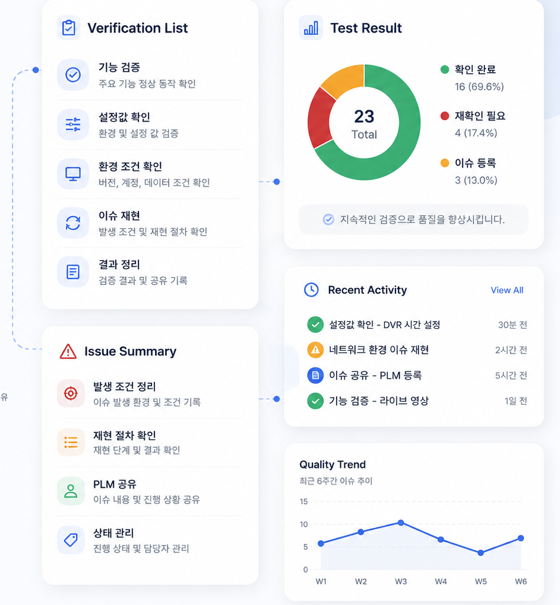
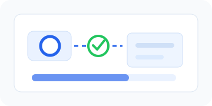
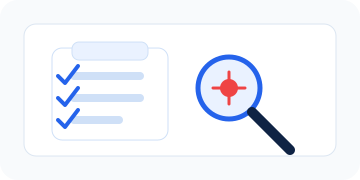
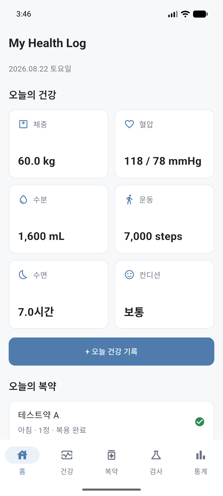

검증 항목 수행
정해진 검증 항목과 테스트 케이스를 기준으로
기능 동작과 결과를 확인
기능 검증, 결함 재현, 회귀 테스트 경험을 바탕으로
제품과 서비스의 품질을 안정적으로 검증하는 QA입니다.

제품과 기능의 품질을 검증하기 위해 기능 검증, 결함 재현, 회귀 테스트, 테스트 결과 정리 업무를 수행했습니다. 이슈 발생 시 버전, 설정값, 환경 조건과 재현 절차를 정리해 공유했습니다.
정해진 검증 항목과 테스트 케이스를 기준으로
기능 동작과 결과를 확인
기능 흐름과 화면 표시를 기준으로
주요 동작을 꼼꼼히 확인
변경 후 기존 기능이 유지되는지
반복 항목을 기준으로 재확인
이슈 발생 조건을 정리하고
재현 절차를 문서화
테스트 장비, 버전, 설정값을 관리하고
검증 조건을 일정하게 유지
테스트 조건과 결과를 명확히 정리하고
재현 가능한 형태로 공유



개인 건강 기록 앱 · QA Case Study